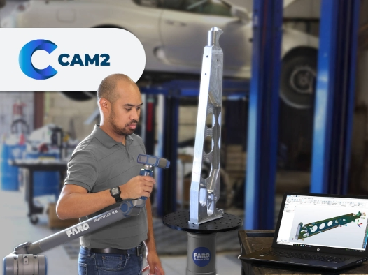

측정 데이터 분석과 품질 검사를 지원하는 3D 계측 소프트웨어

CAM2 Software는 FARO 측정 장비와 연동하여 측정 데이터 수집, 분석, 검사 및 보고서 작성을 지원하는 3D 계측 소프트웨어입니다.
현장에서 취득한 측정 데이터를 CAD 모델과 비교하여 품질 검사를 수행하고, 결과를 시각적으로 확인할 수 있습니다.
측정부터 분석, 보고서 작성까지 하나의 플랫폼에서 수행하여 품질 검사 시간을 단축할 수 있습니다.
측정 결과를 표준화된 형태로 관리하여 품질 이력을 체계적으로 운영할 수 있습니다.
편차 데이터를 기반으로 공정 문제를 파악하고 지속적인 품질 개선 활동에 활용할 수 있습니다.